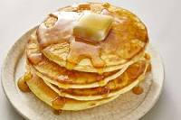

Pancakes

Pancakes really are America's favorite breakfast food. From diners to fancy brunch places,
you can find them at almost any breakfast spot.
Here's my favorite recipe for them. It seems basic, but that's just because I don't know how
to cook.
Ingredients
- Flour
- Baking soda
- Sugar
- eggs
- milk
Instructions
- Combine all dry ingredients into a mixing bowl, and stir until well combined.
- Add your eggs and milk and stir until a thick batter forms
- Set a skillet on medium heat. spoon small ladles of batter onto the skillet
- Once bubbles start to form and pop on the top of the pancakes, flip them over
- When the other side is done, remove from pan and stack onto plate.
- Serve with copious amounts of butter and maple syrup!